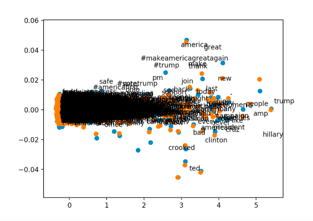
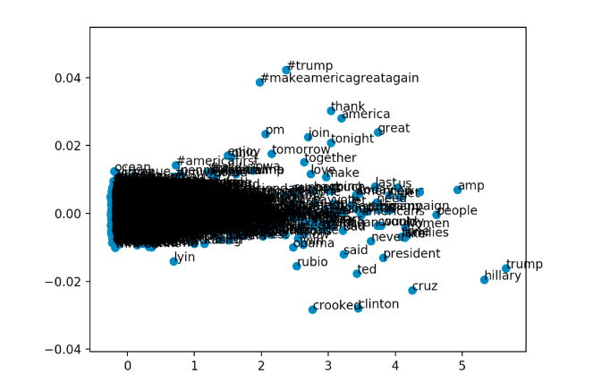

Tweet Predicter
Tweet Predicter classifies tweets as being written by Hilary Clinton or Donald Trump.
Data: Source
We found our training data on kaggle website, where it is publicly available. We used the 3000 most recent tweets from Donald Trump and Hillary Clinton as of 10/25/17. Our training set consists of 6,000 total tweets, but because of tweet cleaning, the final training set consisted of only 5,722 tweets.
Data: Cleaning
In order to clean our tweets, we first removed all junk words such as “the” or “as.” Then, we removed all links and “@’s”. In addition, we removed all tweets that were retweets because, otherwise, that input would be reflecting a user other than Hillary or Donald.
Training: Bag of Words
In bag of words, when using every possible word, the bag of words was too large with a size of at least 4677 words. Because of this, we have to pick a specific portion of the words to use for our bag of words. However, if we use the most common 200 words for example, Clinton and Trump have such similar vocabulary that the delta for each iteration ended up being very minimal and the probability that the neural network would classify correctly was approximately 50/50. When we varied the constants of epochs, neurons, and alpha, the lowest delta after iterations was approximately 0.3. If we had more time and a faster computer, we might be able to test a variety of ranges of words for the bag of words (for example the least common words, or a set of words that are neither common or super uncommon) to see whether we see more of a skew towards Clinton or Trump.
Training: Word Embedding
This approach ultimately did not yield the results we were hoping to find, however it did provide a helpful way of visualizing and understanding similarities between data points. We created a couple of graphs of tweet vocabulary clustered by similarity, and this displays the work that goes on in the hidden layer of the bag of words method. By creating a graph of relative similarity, we could make better sense of why the bag of words method would output the results that it outputs. In the hidden layer, the bag of words methods establishes similarities between words in the vocabulary, represented by the synaptic weights, and so graphing out our word embeddings was helpful to show what the network determined to be similar.
Training: Recurrent Neural Network


Similarly to the word embeddings approach, we could not get this method to the point of identifying tweets. RNN’s, specifically Long-short-term-memory RNN’s, stores old information to make future decisions. We thought that this approach would be useful because using the similarities demonstrated by word embeddings, training would be able to predict future words in given tweets, and by patterns in what words come after another, the author of the tweet should also be easy to determine. This approach is a complicated one, which requires a lot of work, and also would probably provide us with more information on the subject than we originally intended to gleam, but it may produce more accurate results than other methods.
Testing
With a smaller data set of about 200 tweets, we tested a range of constants for hidden neurons and alpha. We discovered that optimal neurons was around 150 and that optimal alpha was about 0.7. However, when we tested with the full data set of 5722 tweets, the training took too long to determine optimal constants. If we assume that the relationship between optimal constant and tweet is proportional, then we can estimate that the optimal neurons is around 4000. However, the relationship is likely a lot more complicated than a simple ratio, so 4000 is probably not the optimal amount of neurons.
Special Thanks
We want to extend gratitude to Sophia Chou for helping us as our mentor.